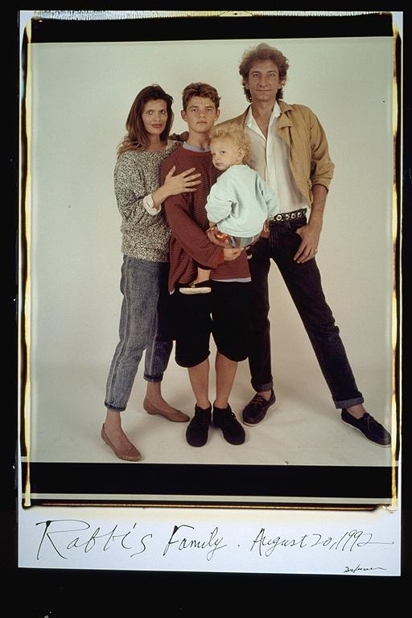

Pals: Boys Who Grew Up Together
elsadorfman.com/pals
Aldo: Rafi's mom worked at this real cool store. They sold all types of leather stuff. It was cool as a kid, cause they sold some sexual stuff. And as kid there was nothing I knew less about. Rafi and I became good friends for a while, but when high school started, he moved away, and no one has heard much from him since then.
Eugene: Rafi's family: Liza, wow, she was a very big part of my childhood. I spent a great amount of my time at Rafi's house on Mass. Ave. I remember she had a loft for a bed, and a computer room with a modem that took like five minutes to plug in. I remember when Rafi's brother used to be a techie -- before there were IT professionals.

elsad@comcast.net